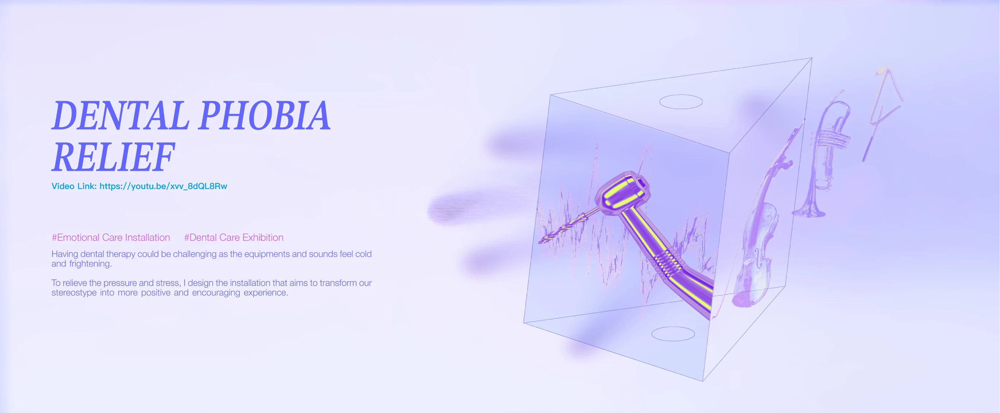
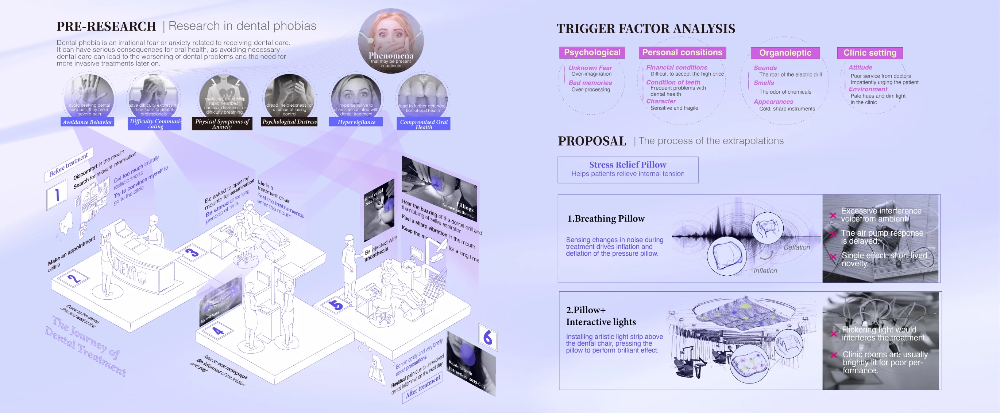
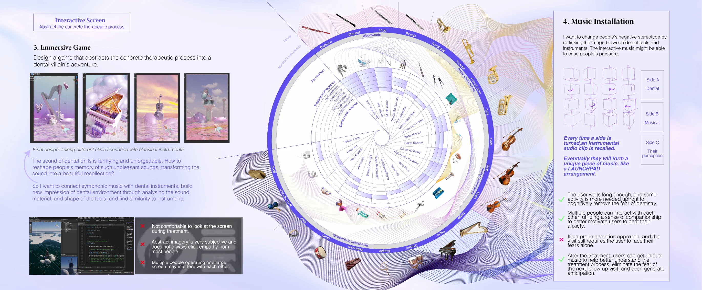
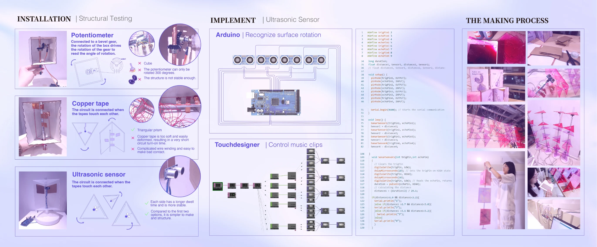
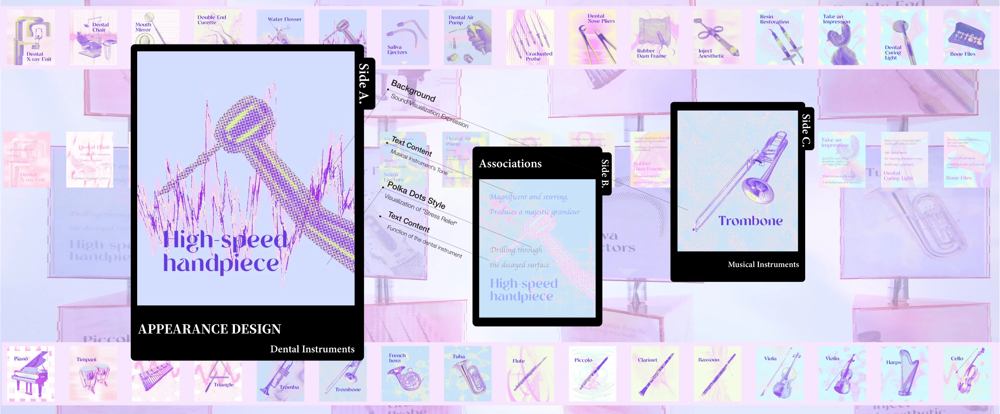
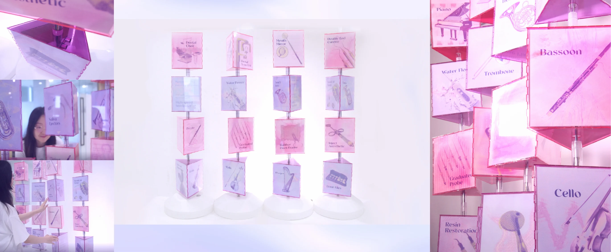

2023 · PERSONAL WORK
SOLACE
Patient-Centred Dental Medical Device Design
SOLACE redesigns dental equipment around clinical workflow, operator ergonomics and patient anxiety to improve the experience for clinicians and patients.
PROJECT DOCUMENTATION





